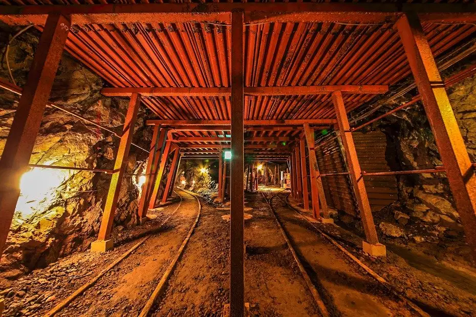

Yabu
Yabu · Hyogo
Yabu
Highlighted on the Hyogo map.

Stay
Ryokan Kozyo
Cooking inn near Yabu IC serving Tajima beef, Yoka pork, and seasonal crab kaiseki
Hotel Ikue Yabu
Business hotel in Yoka for Tajima travel and ski-season stays
Dining
Ryokan Kozyo Dining
Daytime and banquet dining featuring Tajima beef, Yoka pork, and winter crab courses
Michi-no-Eki Youka Tajima-kura
Road-station food court and local produce hall for Tajima specialties
Sights
Akenobe Mine
Former tin and copper mine site interpreting Yabu’s mountain industrial heritage